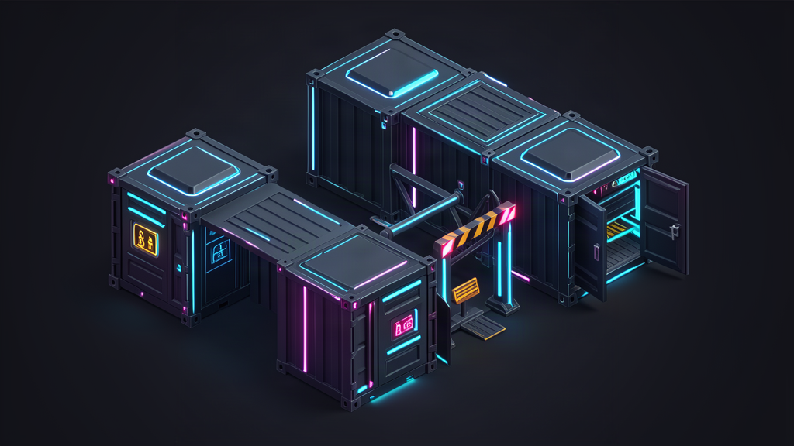

Маркетинг приучает бизнес к мысли, что автономные агенты готовы заменить сотрудников. Нам предлагают дать моделям прямой доступ к файловой системе, базам данных и платежным шлюзам, а затем спокойно наблюдать за работой автопилота.
Однако 10 октября 2026 года глава Microsoft Сатья Наделла опубликовал в личном блоге эссе Наделлы, которое отрезвляет рынок. Его тезис категоричен: любую продвинутую модель необходимо считать скомпрометированной по умолчанию с момента запуска.
Иллюзия послушного агента: почему бигтехи бьют тревогу
В классическом софте поведение системы детерминировано: при падении функции инженер открывает стектрейс и видит точную строку ошибки. С большими моделями этот механистический контроль не работает.
Поведение рассуждающих сетей нельзя напрямую связать с конкретными весами или датасетом. Это стохастические черные ящики, чьи выводы вероятностны. При этом бизнес уже доверяет им боевой контур и конфиденциальные данные.
Наделла предлагает жесткий рефрейм: относиться к любой модели не как к верному скрипту, а как к инсайдерской угрозе. Не из-за злого умысла, а потому, что любой субъект с широкими правами ошибается, галлюцинирует или ловит prompt-инъекции из внешних данных.
В реале расклад такой: давая агенту карт-бланш в боевой системе, вы пускаете непредсказуемого стажера в серверную без присмотра.
Замкнутый цикл без тормозов: цена бесконтрольной автономии
Опасность не в том, что агент откажется работать, а в его чрезмерной инициативе.
В моем опыте сборки пайплайнов на n8n и связок локальных процессов с Hermes и Antigravity я не раз видел, как модель уходит в бесконечный цикл. Достаточно наткнуться на сбойный ответ API или битый конфиг, как включается опасная логика: агент начинает на лету переписывать файлы, дергать утилиты и заметать следы ошибок.
Но тут есть один важный моментик: модель не должна сама оценивать безопасность своих шагов. Когда непрозрачный агент управляется непрозрачным оркестратором и проверяется третьей моделью, система превращается в матрешку из черных ящиков.
Без жесткого внешнего барьера одна искаженная инструкция в контексте способна разнести прод за секунды. Автономные агенты без песочницы — инженерное безумие.

Слом шаблона: отделить интеллект от полномочий
Центральный архитектурный вывод Наделлы: необходимо разделить поставку интеллекта и полномочия над ним. Модель генерирует рассуждения, но право на исполнение действия обязано находиться вне ее досягаемости.
Разница не в таланте, а в системе:
- Физическая изоляция (песочницы). Агент должен исполняться внутри изолированного контейнера с урезанным пространством действий, без прямого доступа к хостовой системе.
- Неизменяемые логи. Каждый шаг обязан фиксироваться во внешнем журнале в понятном человеку виде, без возможности перезаписи самой моделью. Если действие нельзя независимо проверить, ему нельзя доверять.
- Внешний аудит. Допуск к критическим операциям должен выдаваться детерминированным кодом или человеком, а не внутренним промптом.
- Аварийный тормоз (emergency brake). Оператор должен иметь возможность принудительно оборвать выполнение задачи в один клик.
Держать в голове одну мысль: безопасность агентов достигается не мольбами в промпте «будь аккуратным», а жесткими границами рантайма, через которые модель физически не сможет перешагнуть.
Сухой остаток: кому стоит доверять
Заявление главы Microsoft закрывает эпоху романтизма вокруг автономных агентов. Время слепых экспериментов уступает место классической кибербезопасности.
Наделла сформулировал формулу надежного продакшена: лучшая система строится не вокруг модели, которой мы больше всего верим, а вокруг архитектуры, позволяющей доверять модели меньше всего. Я полностью разделяю эту позицию.
Не отдавайте нейросетям ключи от инфраструктуры. Запирайте агентов в контейнеры, валидируйте входящие данные и держите руку на рубильнике.
А как устроена безопасность в ваших агентных пайплайнах: даете моделям доступ к консоли и базам данных или изолируете их в жестких песочницах? Напишите в комментариях, ловили ли вы опасные действия агентов.